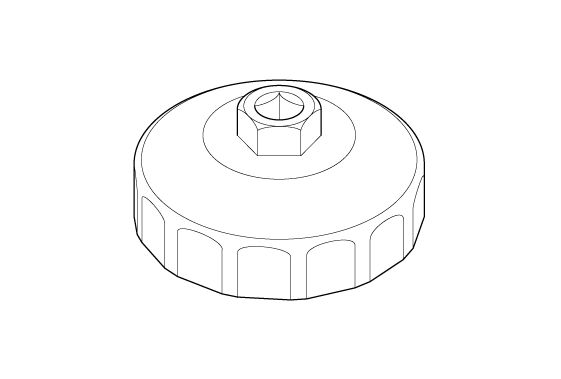

LEMON Manuals
: Even more car manuals for everyone: 1960-2025
Home
>>
Honda
>>
2016
>>
Civic LX, 4D Sedan, Automatic CVT Trans
>>
Repair and Diagnosis
>>
Engine Mechanical
>>
Lubrication System
>>
Lubrication System - Service Information
>>
Removal and Installation
>>
Engine Oil Filter Removal and Installation (K20C1) (2017 2018 2019 2020 2021)
>>
Notes
Engine Oil Filter Removal and Installation (K20C1) (2017 2018 2019 2020 2021): Notes
Special Tools Required
Image
Description/Tool Number

Courtesy of HONDA, U.S.A., INC.
Oil Filter Wrench 07AAA-PLCA100